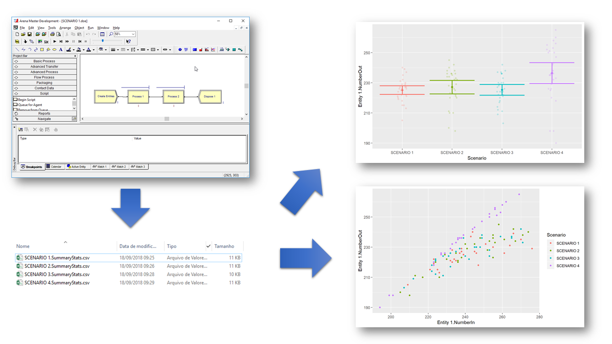

The goal of arena2r is to facilitate the analysis of Arena Simulation Software output in R. This figure illustrates what it does.

What arena2r does.
This package will be usefull to you, if:
- You are an useR;
- You use Arena Simulation;
- You dislike Arena’s simulation Process Analyzer, or similar tools, and have seen yourself struggling to summarise simulation results by hand at excel;
- You want to get your Arena Simulation Output directly to R and have a tidy data.frame with all your results to run your analyses there seamlessly.
I have seen myself in this position many times and resolved to put together a package and stop doing repetitive work, so you can get from Arena results to nice plots in seconds, not hours.
Usage
You can use arena2r online with the demo shiny app at:
https://pedrolima.shinyapps.io/arena2r/
Alternatively, you can install it in your R envinronment.
Installation
You can install arena2r from github in R with:
# install.packages("devtools")
devtools::install_github("pedroliman/arena2r")Use the App locally:
After installing, load the library and run the demo app.
library(arena2r)
runArenaApp()How to use
Please follow the instructions on this tutorial to use Arena2r.
Wishlist
- The package won’t run different simulations for you based on a Design of Experiments;
- There is no guarantee that the package will acomodate future changes in the csv format exported by Arena. The package is tested with the Arena 14.00 version;
- The package only uses the standard csv pattern (If you are Brazillian like me, it’s easier to change your regional configurations).
Pull requests are welcome.